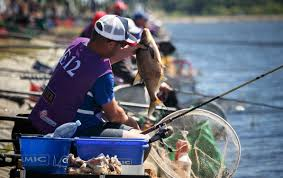
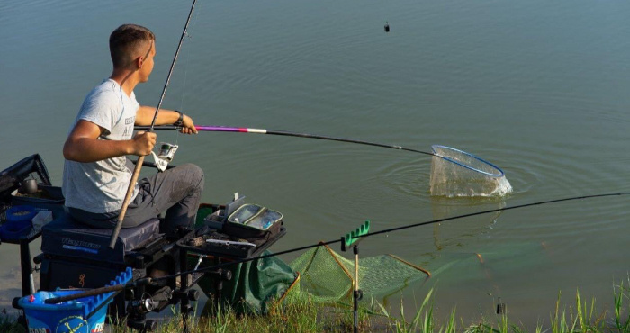
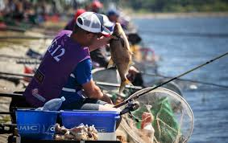
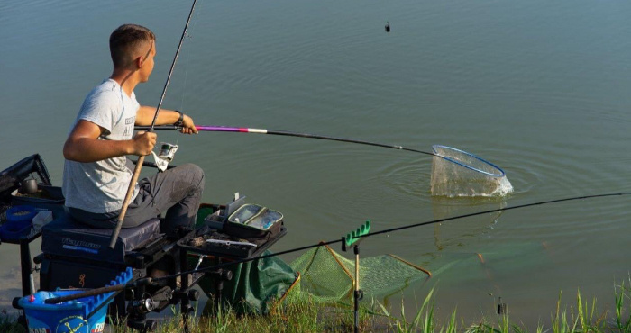

Рибальський спорт, або Спортивне рибальство — ловля риби спортивними снастями (вудками, спінінгами тощо), вид активного відпочинку, що практикується, як спорт або хобі. Спортивні рибалки
мають об'єднання та клуби, які проводять регулярні змагання>
Спортивне рибальство є екологічно виправленою похідною рибальства, як виду розваги. Філософія цього виду спорту полягає в популяризації принципу «спіймав-відпустив» (англ. Catch and release)
і бережливого ставлення до риби, із заподіянням мінімальної шкоди. До спортивної також часто відносять коропову ловлю, причому короп не є видом, що потребує охорони, а навпаки — інвазивним,
тому рятування та збереження його популяції є, скоріше, питанням етичним та філософським, ніж екологічно доцільним. Те саме стосується ловлі срібного карася, товстолоба, білого амура.
Розпочав свою історію в спортивному риболовстві ще коли мені було всього8 років. Перший раз я поїхав з татот і отримав свою першу нагороду"Наймолодший риболов"
Декілька років пспіль я не їздив на змагання, яале коли поїхав у 2015 році і отримав нагороду за найбільшого пійманого окуня 2.4кг. Після цього наступну нагороду я отримав коли поїхав на
змагання з свої дядьком. Змагання тривало 2 дні 2 ночі,в результаті нагорода за 4 місце в парному риболовстві.
 


